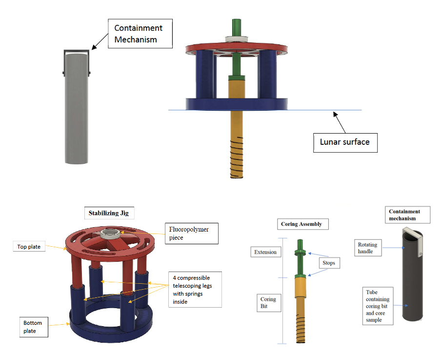

Design and manufacture a coring bit, stabilizing jig, and sample containment mechanism able to drill into and retrieve a sample core.
NASA has been challenged to go forward to the Moon by 2024 with our Artemis Program. Artemis will send astronauts and robots to obtain samples from new locations of the lunar surface, including the lunar South Pole which contains ice. Taking a sample is critical for scientific research, yet drilling and capturing a pristine sample is challenging. Designing an appropriate coring bit, which fits existing tools, which can drill and capture a small core, is important for testing on the Moon and designing sampling mechanisms for other worlds. For more information, read the RFP here.
Safe. Precise. Light-weight.
Our design features a hollow coring drill bit, a two-part spring-loaded stabilizing jig, and a simple sample containment mechanism. The parts are shown below. We have a functional 3D printed prototype and we are working on manufacturing our stabilizing jig.
NASA Micro-Gravity Neutral Bouyancy Experimental Design Teams
Learn more about projects and teams on the NASA Micro-G website.